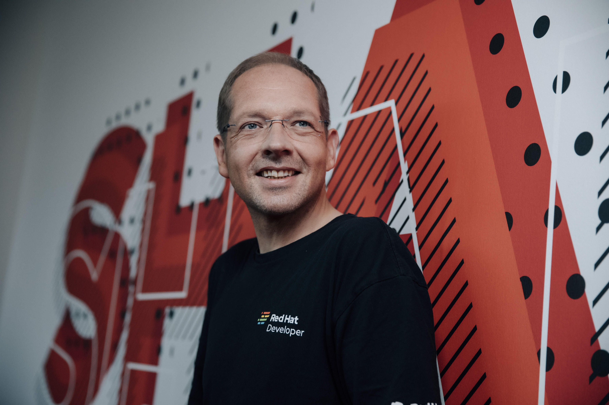

Organizer
Ken Fogel
Ken retired from the classroom after 31 years teaching software development at Dawson College, 25 of those years as the chair and program coordinator of the Computer Science Technology Program. He is currently a Research Scholar in Residence at the college. His first book, Transitioning to Java, was recently published by Packt. He has spoken and continues to speak at numerous conferences around the world.
CFP Committee
The CFP committee is comprised of a small group of Java Champions.

Michael Redlich
Java Champion | Director at Garden State JUG | Lead Java Editor at InfoQ Java | Contract Developer Advocate and Technical Writer at Payara
Michael Redlich has been an active member within the Java community for the past 25 years. He founded the Garden State Java User Group (formerly the ACGNJ Java Users Group) in 2001 where he serves as one of the directors. Since 2016, Mike has served as a Java community news editor for InfoQ where his contributions include the weekly Java news roundup, news items, technical articles and technical reviews from external authors. He is currently the lead Java Queue editor. Mike served as a contract Developer Advocate and Technical Writer for Payara from 2023 through 2025.
He is the author of "Helidon Revealed: A Practical Guide to Oracle’s Microservices Framework" that was released in December 2024.
Mike has presented at venues such as Devnexus, JavaOne, Oracle Code One, JCON World, Emerging Technologies for the Enterprise, Trenton Computer Festival (TCF), TCF IT Professional Conference, and numerous Java User Groups. Mike serves as a committer on the Jakarta NoSQL and Jakarta Data specifications and the Eclipse JNoSQL project. He also participates on the leadership council of the Jakarta EE Ambassadors. Mike was named a Java Champion in April 2023.
He retired from ExxonMobil Technology & Engineering in June 2023 with 33½ years of service. His experience included developing custom scientific laboratory and web applications, polymer physics, chemometrics, infrared spectroscopy and automotive testing. He also has experience as a Technical Support Engineer at Ai-Logix, Inc. (now AudioCodes) where he provided technical support and developed telephony applications for customers.

Elias Nogueira
Rustam Mehmandarov
Rustam is a Java Champion and Google Developer Expert (GDE) for Cloud. He lives and works in Oslo, Norway, working as a chief engineer and consultant specializing in Java platform, and a competency network coordinator at work. Previously, he has been leading JavaZone and the Norwegian JUG – javaBin. Rustam is passionate about open source and sharing his knowledge with others. He is a frequent speaker at both national and international conferences and events.

Henri Tremblay
Managing Director, Head TS Imagine Canada
Henri Tremblay is a Java Champion. He leads EasyMock and Objenesis open source projects. When he was young, he made popular mocking classes, invented partial mocking, and was coding with pragmatism.
His interest in engaging with the community led him to get involved with PerfUG, USI, the Montreal JUG, Devoxx4kids, and the Montreal CTO Meetup.
He has been a developer, CTO, software architect, enterprise architect, startup founder, teacher and performance expert. With pragmatism. He is currently managing TS Imagine Canada.
He loves optimization and productivity. In Java and in general. He tries to be useful. He is pragmatic.
Follow Henri — 🌐


Simon Martinelli
Simon Martinelli is a Java Champion, a Vaadin Champion, and an Oracle ACE Pro. He regularly shares his knowledge in articles, speaks at international conferences, and writes his blog: https://martinelli.ch. He owns Martinelli LLC and has worked as a software architect, developer, consultant, and trainer for three decades, especially in the Java Enterprise environment. In addition to his work, he is a lecturer at two universities in Switzerland.
Josh Juneau
Josh Juneau is an Application Developer, Database Administrator, and System Analyst in his day job. His primary focus is on Java EE, Jakarta EE, and web/enterprise systems, as he has been developing distributed database application systems since the early 2000s. Josh also enjoys working with JavaFX as well as other JVM languages. Member of the JCP, an Apache NetBeans developer, Java Champion. He has written a number of books for Apress and technical articles for publications such as Java Magazine. Josh is a usual suspect on the OffHeap and Stackd podcasts.
Website and Sponsorship
Josh Juneau
Josh Juneau is an Application Developer, Database Administrator, and System Analyst in his day job. His primary focus is on Java EE, Jakarta EE, and web/enterprise systems, as he has been developing distributed database application systems since the early 2000s. Josh also enjoys working with JavaFX as well as other JVM languages. Member of the JCP, an Apache NetBeans developer, Java Champion. He has written a number of books for Apress and technical articles for publications such as Java Magazine. Josh is a usual suspect on the OffHeap and Stackd podcasts.
Learn about becoming a free sponsor by visiting https://jchampionsconf.com/sponsors.html.